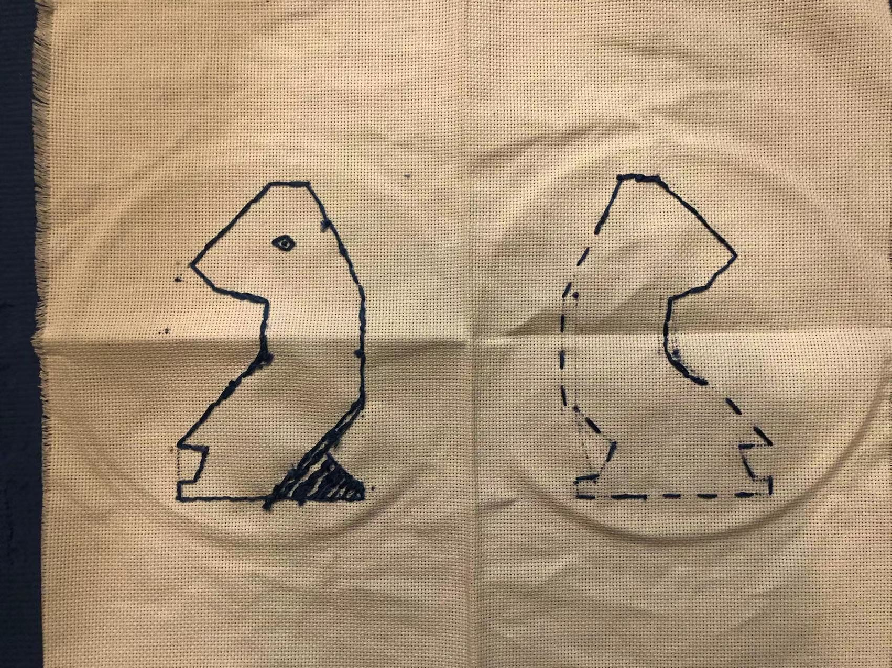

Exhibition of Wonder - Bag with Embroidery
Day 2

On the second work day, I attempted to redraw the same design on the front side of the bag on the back side invereted, but it took far longer than expected, lasting two blocks rather than the planned one. This was also infuriating, as I felt like such a simple task shouldn't've taken so much time, and at the end I ran out of blue thread and was unable to finish my goals for the day outlined at the end of the previous one.
[Previous Day]
[Back to Hub]
[Next Day]